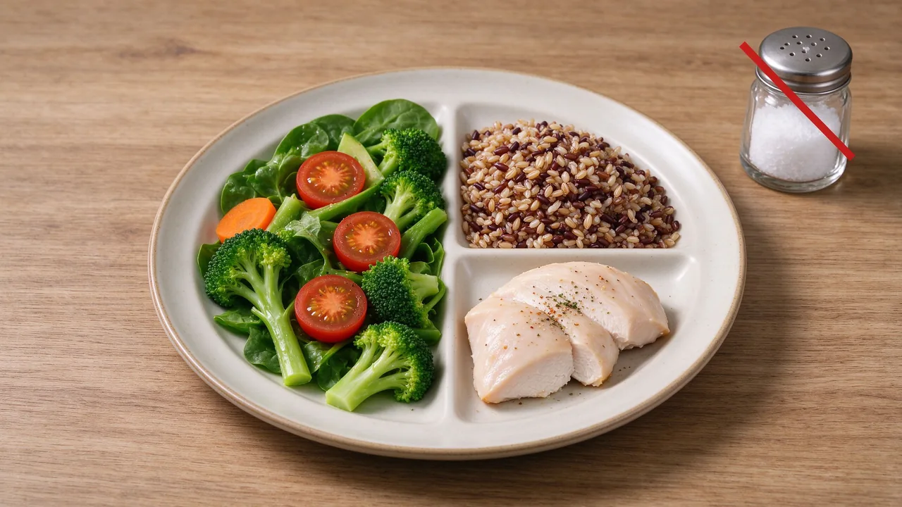

糖尿病飲食完整指南：低GI、低醣、外食怎麼點

一、糖尿病飲食不是不能吃飯
重點是讓血糖不要像溜滑梯。低 GI（GI<55）食物升糖慢、有飽足感。白飯改成糙米、白土司改成全麥，血糖波動立刻減半。
二、低GI食物清單
主食：糙米、燕麥、地瓜、藜麥。水果：芭樂、小番茄、蘋果、莓果。避免：西瓜、荔枝、芒果、果汁、蛋糕。
三、外食怎麼點
211 餐盤：2 份蔬菜、1 份蛋白質、1 份澱粉。選擇滷、烤、蒸，避開炸、勾芡。不喝湯底、不喝果汁。
四、真實案例
52 歲林先生飯後血糖常達 200 mg/dL。營養師建議把早餐珍珠奶茶換成無糖茶＋蛋三明治，午餐便當白飯減半加燙青菜。一個月後飯後血糖降到 140。